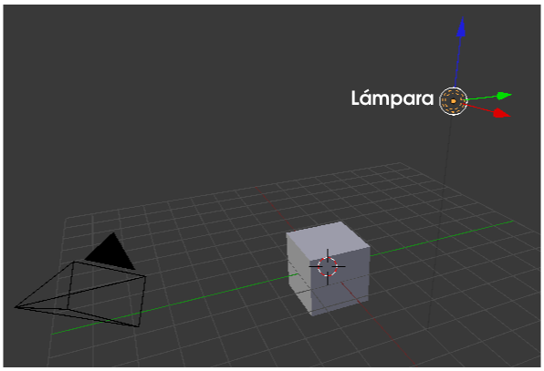
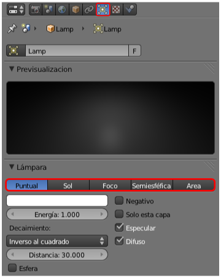

Lámparas
Damos por hecho que tenemos seleccionada en el editor Vista 3D la lámpara.
Hay cinco tipos de lámparas y el icono del panel cambia en función de cada una de ellas.
- Puntual
 . Es la que incorpora Blender en la escena por defecto. Su principal característica es la de emitir luz en todas las direcciones desde el origen. En esencia se comporta como una bombilla.
. Es la que incorpora Blender en la escena por defecto. Su principal característica es la de emitir luz en todas las direcciones desde el origen. En esencia se comporta como una bombilla.
- Sol
 . Se trata de una iluminación basada en rayos de luz paralelos entre sí para simular que la luz se encuentra en un punto situado en el infinito, a diferencia de Puntual que está situado en un punto concreto. En muchas ocasiones la localización de la lámpara Sol es puramente anecdótica siendo lo realmente importante la dirección de los rayos.
. Se trata de una iluminación basada en rayos de luz paralelos entre sí para simular que la luz se encuentra en un punto situado en el infinito, a diferencia de Puntual que está situado en un punto concreto. En muchas ocasiones la localización de la lámpara Sol es puramente anecdótica siendo lo realmente importante la dirección de los rayos.
- Semiesférica
 . La iluminación procede de un casquete semiesférico que podemos comparar fácilmente con el cielo. Crea una iluminación general que no origina sombras.
. La iluminación procede de un casquete semiesférico que podemos comparar fácilmente con el cielo. Crea una iluminación general que no origina sombras.
- Área
 . Aquí el que emite la luz es un plano en una determinada dirección. Se suele usar para simular la luz emitida desde una pantalla de cine y efectos similares.
. Aquí el que emite la luz es un plano en una determinada dirección. Se suele usar para simular la luz emitida desde una pantalla de cine y efectos similares.
- Foco
 .Hemos dejado esta lámpara para el final porque junto a Puntual y Sol es uno de los más utilizados. Podemos decir que es un caso particular de Puntual sólo que su propagación no es esférica sino cónica.
.Hemos dejado esta lámpara para el final porque junto a Puntual y Sol es uno de los más utilizados. Podemos decir que es un caso particular de Puntual sólo que su propagación no es esférica sino cónica.
Dominar las posibilidades de cada una de ellas es una cuestión que lleva tiempo comparando renders y sacando conclusiones de cada uno de ellos.
Hay una serie de parámetros comunes a todas ellas que pasamos a analizar a continuación.